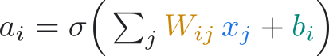
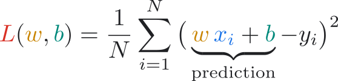
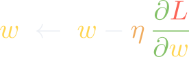
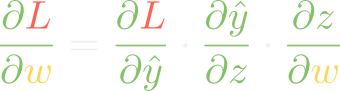
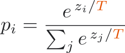
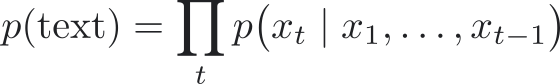
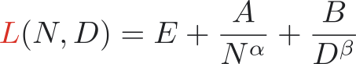

For its first word it weighed 0 possible tokens…
How does a pile of numbers decide that?
One model reads text, images, audio and video, 1M tokens at a time (roughly ten novels). Others generate images (Nano Banana), video with sound (Veo), music (Lyria) and worlds (Genie 4).
Trained with reinforcement learning to reason before answering, spending more compute on harder problems: IMO gold-medal standard in 2025. You choose how hard they think.
A mixture of experts: each layer holds 100+ small expert networks and every token visits a few. Frontier (Gemini 4) and open alike: Gemma 4 26B uses 3.8B of its 25B parameters per token.
Models call tools: Google Search, Python, maps, your documents, even a web browser they operate by looking at the screen. Or any function you write: a database, a simulator, an instrument.
If the model is the engine, the harness is the car: the loop that plans, calls tools, checks the results and asks before risky steps. Antigravity and Gemini CLI are harnesses.
MCP plugs any AI app into any tool or data source (“USB-C for AI”). AGENTS.md is a README for coding agents (60k+ projects). A2A lets agents talk. All open, at the Linux Foundation.
Price per token misleads: thinking and agent loops use many more tokens. Count the cost of a finished task: Le Chonk ties the top open model on a coding-agent index with 47% fewer tokens.
Open-weight models such as Gemma 4 (Apache 2.0) run on a laptop or a phone. You can inspect them, fine-tune them and keep your data private.
200M+ predicted protein structures, millions of new crystals, better weather forecasts, new algorithms, AI “co-scientists”.
Flagship today: Gemini 4 Carbon, a sparse mixture-of-experts Transformer. Natively multimodal, 1M-token context, knowledge cutoff March 2026 model card, Oct 2026
The internet, ImageNet (14M images), trillions of tokens of text & code
GPUs & TPUs: training compute grew 4–5× every year since 2010, about 10 billion× in 15 years
Backprop, ReLU, Adam, residual connections, attention, mixture-of-experts
John J. Hopfield & Geoffrey E. Hinton
“for foundational discoveries and inventions that enable machine learning with artificial neural networks”
David Baker · Demis Hassabis & John M. Jumper
“for computational protein design” · “for protein structure prediction” (AlphaFold)
AI is no longer just a tool for science. It is now part of how science is done.
Rear Admiral Grace Hopper, computing pioneer. Each pixel is 3 numbers (red, green, blue) from 0 to 255. Even this 64 × 75 version is 14,400 numbers.
EEG: 4 channels × 800 samples
| name | shape | example |
|---|---|---|
| scalar | () | a temperature |
| vector | (640) | one token’s embedding |
| matrix | (640, 1024) | a layer’s weights |
| 3D tensor | (600, 512, 3) | a colour photo |
| 4D tensor | (32, 600, 512, 3) | a batch of 32 photos |
A neural network is a machine that transforms tensors into other tensors. That's literally why Google's library is called TensorFlow.

Drag the tips of î and ĵ: the first column of the matrix is where î lands, the second is where ĵ lands.
A layer with 640 inputs does exactly this in 640 dimensions: stretch, rotate, shift, bend.

A trained 2-2-2-2 network: only 21 numbers. Watch it unfold two tangled moons until a single straight line separates them, at 100% accuracy.
Gemma 3 270M: 268,098,176 weights = embeddings 167.8M (63%) + 18 layers × 5.57M each (attention 1.64M + MLP 3.93M).
A toy model of the idea, not a benchmark: real CPUs and GPUs also reuse numbers through caches and Tensor Cores, and real chips tick about 2 billion times a second.
The 8 planets. Can a machine rediscover a law of nature from data?



forward → loss → backward → update. Repeat. That loop is all of deep learning.
Every matrix multiply of a real language model, rendered in 3D
Embeddings → (attention + MLP) × N layers → probabilities over the vocabulary

262,144 scores → softmax → probabilities. Low T = cautious, high T = creative (or unhinged).

Write one token, append it, predict again. Real outputs from Gemma 3 270M (pretrained). Small models also confidently make things up: try “largest planet”.
Predict the next token on trillions of tokens of text, code, images, audio. Weeks on thousands of TPUs.
Fine-tune on great example answers, then reinforcement learning from human (and AI) feedback. This is where “Hi there! How can I help?” comes from.
RL on problems with checkable answers (maths, code) teaches models to reason step by step before answering.

Chinchilla scaling law (Hoffmann et al. 2022; refit by Besiroglu et al. 2024)Copy great example chats, written or checked by people. Same next-token loss, better data.
People pick the better of two answers; a reward model learns their taste and coaches the AI, on a leash.
For maths and code, a checker marks the answer or runs the tests. That's how “thinking” models learn to reason.
Distillation and RL on checkable answers teach small models to reason step by step. DeepSeek-R1’s 1.5 B distilled model beat GPT-4o at competition maths, and Gemma 4 runs on phones and laptops with configurable thinking.
Specialists built from generalists: keep training an open model on one field’s data. MedGemma reads medical images; C2S-Scale reads cells as “sentences”, and its cancer-drug idea held up in living cells.
Models that learn how a world changes when you act, so an agent can imagine before it moves. Genie 4 generates explorable worlds from a prompt in real time; agents and robots can rehearse there first.
A model in a loop: plan, call tools (search, code, a browser), check, repeat. AlphaEvolve, a Gemini coding agent, beat Strassen’s 1969 record for 4×4 complex matrices (48 multiplications). Agents’ task length doubles ~every 7 months.
Teams of specialised agents propose, critique and rank each other’s ideas. Google’s AI co-scientist works this way; some of its drug-repurposing picks for leukaemia worked in lab tests. Coding tools now fan one job out to hundreds of agents.
Always-on agents. OpenClaw is open source, runs on your own machine and takes requests from WhatsApp or Telegram; Grok Bot runs cloud teammates on a computer of their own, 24/7. Both hold your logins, so prompt injection is a real risk.
AlphaFold predicts protein shapes from sequence: 200M+ structures, free to all; AlphaFold 3 adds DNA, RNA and drugs. AlphaGenome reads 1 million DNA letters to predict how variants change gene regulation.
GNoME found 2.2 million new crystal structures, ~380,000 predicted stable: candidate batteries, solar cells, superconductors. GenCast’s 15-day ensemble forecasts beat the leading physics system on 97.2% of targets.
AI far beyond humans in nearly every domain. Today’s AI is superhuman in some (like its neighbours), not all. Labs name it as their goal; Hinton and Bengio back a ban until it’s shown safe and the public agrees.
Same building blocks as tonight (neurons, attention, gradient descent), reassembled: smaller, specialised, simulating worlds, and acting in loops and teams.
It predicts plausible tokens, not true ones. Always verify facts, citations and numbers.
Models inherit the gaps and biases of their training data, including scientific blind spots.
Compute grows 4–5× a year. Efficiency (MoE, distillation, better chips) is a research field of its own.
Benchmarks leak into training data and saturate fast. Measuring real ability is hard.
We can see every weight, yet still struggle to explain why. Interpretability is wide open.
Guardrails, watermarking (SynthID) and frontier-safety evaluations are part of every release.
Multiply, bend, repeat. Measure the error, roll downhill, repeat.
Then do it at an absurd scale.
GDG AI for Science · thank you! 🙏